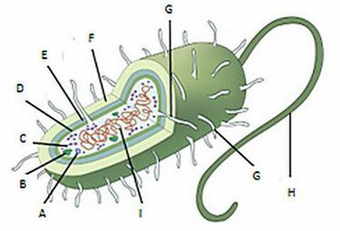
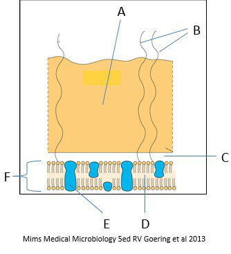
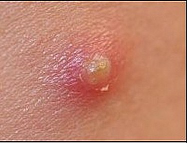
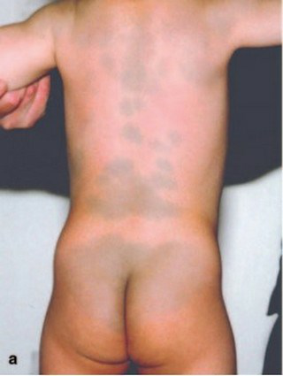
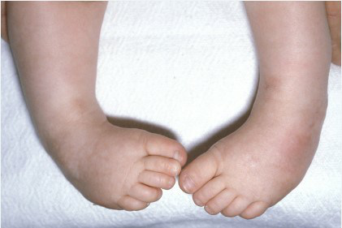
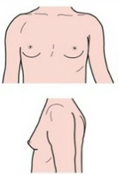

Vraag 1
Een bacterie (een prokaryoot) heeft verschillende celonderdelen. Ook een eencellige (een eukaryoot) heeft celonderdelen. In het algemeen verschilt een prokaryoot van een eukaryoot in een bepaald onderdeel.
Welk onderdeel is dat?

Vraag 2
Op het consultatiebureau ziet de arts een 3-jarig kind dat onder de P10 meet in lengte en gewicht naar lengte. De vader zegt dat het kind stinkende diarree heeft met af en toe slijm erbij. Er is geen koorts gemeten. Het kind is nooit in het buitenland geweest maar gaat wel naar de dagopvang.
Wat is de meest waarschijnlijke microbiologische oorzaak bij deze symptomen?
Vraag 3
Een hematologisch patiëntje met een intraveneuze katheter krijgt koorts en koude rillingen. De verdenking is lijnsepsis ontstaan vanuit de insteekopening van de katheter met huidbacteriën. De katheter moet gewisseld worden omdat bacteriën in een biofilm op de katheter groeien. Biofilmformatie hangt af van het vermogen van bepaalde bacteriën om een bepaalde stof te produceren.
Om welke stof gaat het?
Vraag 4
Resistentie van bacteriën voor antibiotica komt steeds meer voor. Vooral in medische centra wordt die makkelijk en vaak van de ene stam op de andere overgedragen. Dit kan direct via plasmiden.
Hoe noemen we het proces waarin de transfer van een plasmide van de ene bacterie naar de andere plaatsvindt?
Vraag 5
Een 9-jarige klaagt over perianale jeuk. Het is zijn vader opgevallen dat hij al weken slecht slaapt. De huisarts denkt aan enterobiasis en inspecteert het gebied maar ziet niets.
Hoe kan de huisarts deze infestatie alsnog aantonen?
Vraag 6
In een groot kinderdagverblijf is er een epidemie met Streptococcus pneumoniae, resulterend in verschillende gevallen van otitis media en zelfs meningitis. Sommige kinderen hebben geen symptomen maar zijn wel keeldrager van deze bacterie. Er is een nieuwe antigeentest (AgTest) ontwikkeld die binnen 15 minuten in de urine aantoont of er een pneumokokkeninfectie speelt. De resultaten van deze antigeentest worden vergeleken met kweekresultaten. De uitslagen hiervan zijn als volgt:
AgTest positief, kweek positief: 25 kinderen
AgTest positief, kweek negatief: 5 kinderen
AgTest negatief, kweek positief: 15 kinderen
AgTest negatief, kweek negatief: 92 kinderen
Wat is de specificiteit van deze nieuwe test in procenten wanneer we de kweek beschouwen als gouden standaard? Rond af tot een heel getal.
AgTest positief, kweek positief: 25 kinderen
AgTest positief, kweek negatief: 5 kinderen
AgTest negatief, kweek positief: 15 kinderen
AgTest negatief, kweek negatief: 92 kinderen
Wat is de specificiteit van deze nieuwe test in procenten wanneer we de kweek beschouwen als gouden standaard? Rond af tot een heel getal.
Modelantwoord
86 % (specificiteit = TN / (TN + FP) = 92 / (92 + 5) = 92/97 ≈ 0,948 → 95%. Let op: de vastgelegde sleutel van deze toets is 86%; zie flag.)
Vraag 7
Een prikkelbaar 18-maanden oud kind met koorts heeft blaasjes en zweertjes op de mucosa van de mond. Ze weigert te eten. In de dagen erna worden de plekjes eerst erger. Ze verdwijnen in de loop van twee weken. Een jaar later ontstaat er een enkel blaasje in haar mondhoek zonder verdere verschijnselen. Het is na zes dagen verdwenen.
Wat is de meest waarschijnlijke verwekker?
Vraag 8
Dit is een schematische tekening van een bacterie. Wat wordt aangeduid met de letter A?

Vraag 9
Welke twee virussen hebben oncogene eigenschappen?
Meerdere antwoorden mogelijk.
Vraag 10
Een medicijn bedoeld voor injectie was gecontamineerd met Gramnegatieve staven tijdens de productie. Het product was door een bacteriefilter gehaald voordat het verpakt werd. Kwaliteitscontrole was goed, d.w.z. het bleek steriel. Het medicijn werd verpakt en verstuurd. Maar verschillende patiënten die het medicijn toegediend kregen werden ziek met koorts en hypotensie.
Welke stof is waarschijnlijk voor deze reactie verantwoordelijk?
Vraag 11
Een 2-jarige die een aantal vaccinaties van het RVP heeft gemist wordt de SEH binnengebracht met hoge koorts, terwijl hij suf is en kwijlt. Er is een inspiratoire stridor en hij is zo benauwd dat de kinderarts besluit tot intubatie. Het strotteklepje is rood en oedemateus.
Van welke infectie is hier sprake?
Vraag 12
Een 15-jarige jongen heeft regelmatig last van huidinfecties. Soms een furunkel (steenpuist, "boil") dan weer folliculitis.
Wat is de meest voorkomende verwekker van deze huidinfecties?

Vraag 13
Kies de juiste alternatieven.
Streptokokken worden onderverdeeld naar hun groeigedrag op de schapenbloedagarplaat. Als er kolonies groeien waarbij je na 12 uur door de agarplaat heen kunt kijken noemen we dit . Als de kolonies met een groenige waas groeien noemen we dit .
Vraag 14
Wat is assimilatie in de theorie volgens Piaget?
Vraag 15
In gesprekken met adolescenten moet de arts zich aanpassen aan de leeftijdsfase en een vertrouwensband opbouwen door het taalgebruik van jongeren zoveel mogelijk over te nemen.
Vraag 16
Kies de juiste alternatieven.
De ontwikkeling van een kind hangt mede af van de opvoedstijl van ouders. Deze ontwikkeling is positief bij warmte en ondersteuning en positief bij autoritatieve controle.
Vraag 17
Een 40-jarige man zoekt hulp bij een psycholoog vanwege steeds weer optredende relatieproblemen. Het blijkt dat hij moeite heeft met intimiteit en de neiging heeft om te weinig te investeren in sociale en liefdesrelaties. Hij vindt het moeilijk om zijn gevoelens te delen met anderen en zoekt weinig sociale steun. De psycholoog denkt dat hier sprake zou kunnen zijn van een hechtingsstoornis die voortkomt uit de prille jeugd.
Welk hechtingstype zou het beste passen bij de problemen van deze man?
Vraag 18
Tijdens de adolescentie is er een toename van de witte stof, terwijl de grijze stof afneemt. Welke twee processen spelen daarin een belangrijke rol?
Meerdere antwoorden mogelijk.
Vraag 19
Tijdens de puberteit zijn jongeren veel meer dan in andere leeftijdsfasen geneigd om risico's te nemen, wat zich onder andere uit in het feit dat adolescenten vaker ongelukken hebben en vaker delinquent gedrag laten zien. Dit wordt wel verklaard vanuit de disbalanstheorie.
Waartussen is er eigenlijk disbalans?
Vraag 20
Kies de juiste alternatieven.
De cognitieve ontwikkeling in de adolescentie kenmerkt zich door een toename van het vermogen om te denken. Sociaal-emotioneel is er tijdens de adolescentie sprake van een proces van losmaking van ouders/verzorgers, dat bij de meeste jongeren met ernstige crises gepaard gaat. Deze laatste stelling is .
Vraag 21
Uit Nederlands onderzoek uit 2017 blijkt dat de helft van de jongeren geslachtsgemeenschap heeft gehad op de leeftijd van
Vraag 22
In een medisch consult met adolescenten kan drugsgebruik ter sprake komen. Er zijn verschillende wijzen om dit te doen. De ene wijze is meestal beter dan andere om goed contact met de adolescent te krijgen.
Welke zin om drugsgebruik ter sprake te brengen met een 15-jarige tiener is van de hieronder genoemde opties de beste? "Er zijn heel wat tieners die blowen, … "
Vraag 23
In een medisch consult met adolescenten is het verstandig om een aantal communicatieve benaderingen in acht te nemen: de ene benadering is meestal beter voor de relatie met de adolescent dan andere benadering.
Welke van onderstaande benaderingen is voor een goede relatie het meest verstandig? In het gesprek met een adolescent van 15 jaar is het verstandig om…
Vraag 24
De moeder van Heleen (4 jaar) en Ariadne (6 maanden) vraagt advies aan de huisarts. Heleen heeft een ernstige allergie voor pinda. Ariadne krijgt volledig borstvoeding en heeft een licht constitutioneel eczeem. Moeder wil weten of ze Ariadne pindakaas mag geven.
Wat kan de huisarts nu als beste doen?
Vraag 25
Bij de opvang van een acuut ziek kind op de eerste hulp blijkt sprake te zijn van een status asthmaticus.
De toediening van welke twee medicijnen heeft prioriteit in de behandeling?
Meerdere antwoorden mogelijk.
Vraag 26
Kies de juiste alternatieven.
Bij de reanimatie van een kind van 8 jaar worden afwisselend 15 thoraxcompressies gegeven en 2 beademingen met het hoofd in 'sniffing' positie. Bij de reanimatie van een zuigeling van 6 maanden worden afwisselend thoraxcompressies gegeven en beademingen met het hoofd in positie.
Vraag 27
Een 2-jarig kind presenteert zich op de eerste hulp met een ernstige pneumonie. De vitale gegevens zijn een hartslag van 170/minuut, een ademhaling van 60/minuut, een saturatie van 84% in kamerlucht, een bloeddruk van 100/60 mm Hg en een rectale temperatuur van 38,9 graden Celcius. Bij lichamelijk onderzoek wordt een suf kind gezien met een bleke huid, intrekkingen, cyanotische lippen, een capillaire refill van 5 seconden en koude handen en voeten. Bij auscultatie hoor je links-basaal verminderd ademgeruis en crepiteren.
Welke drie elementen uit deze casus informeren je het beste over de effectiviteit (efficacy) van de ademhaling van deze patiënt?
Meerdere antwoorden mogelijk.
Vraag 28
Een 14-jarige jongen wordt op de SEH gepresenteerd in verband met een paracetamol-intoxicatie. Hij heeft 4 uur geleden zo'n 30 tabletten van 500 mg paracetamol ingenomen.
Welke twee van de volgende acties hebben de hoogste prioriteit?
Meerdere antwoorden mogelijk.
Vraag 29
Ron van twee jaar oud heeft enkele slokken gedronken uit een fles die in het gootsteenkastje stond. Wat is het risico op ernstige schade bij de volgende stoffen?
afwasmiddel
ammoniak
gootsteenontstopper
terpentine
Vraag 30
Zarah van 2 jaar oud is in een onbewaakt ogenblik het zwembad ingelopen en is waarschijnlijk 10 minuten onder water geweest. Nadat hij uit het water gehaald wordt zijn er geen tekenen van leven en beginnen omstanders direct met reanimatie.
Welke drie stellingen over deze reanimatie zijn correct?
Meerdere antwoorden mogelijk.
Vraag 31
Tijdens het luisteren van de harttonen van een patiënt concludeert de huisarts dat er sprake is van een fysiologische splijting van de tweede harttoon.
Hoe ontstaat deze?
Vraag 32
Een patiënt komt bij de huisarts in verband met pijnklachten van het rechterbeen. Op basis van de anamnese denkt de huisarts aan perifeer arterieel vaatlijden. Bij onderzoek van het rechterbeen vindt de huisarts een capillaire refill van 3 seconden, een corona phlebectatica, convoluten en een souffle over de a. femoralis.
Welke van deze bevindingen wijst het meest op de aanwezigheid van perifeer arterieel vaatlijden?
Vraag 33
Hieronder is een foto afgebeeld van een meisje van 3 maanden oud. Zij is uit de armen van moeder gevallen en vader heeft dit gezien. Het kind wordt nagekeken en bij topteenonderzoek ziet de arts de volgende huidafwijking, verder zijn er geen afwijkingen.
Wat is in het geval van bovenstaande casus correct?

Vraag 34
Welke twee van de onderstaande stappen uit de KNMG-meldcode kindermishandeling en huiselijk geweld zijn verplicht?
Meerdere antwoorden mogelijk.
Vraag 35
In welke situatie dient een arts een kindcheck uit te voeren?
Vraag 36
Maud, 10 weken oud, wordt op de EHBO gepresenteerd vanwege 39.2 graad koorts en spugen sinds twee dagen. Ze heeft geen diarree. Ze heeft de afgelopen 6 uur niet geplast. Je moet een urinemonster afnemen.
Wat is de aangewezen techniek in deze situatie?
Vraag 37
Welke vier mechanismen bevorderen het ontstaan van urineweginfecties?
Meerdere antwoorden mogelijk.
Vraag 38
Bij Cornelis (6 maanden) is het scrotum aan de rechterkant een zwelling te zien. Bij palpatie is in de vrij gespannen staande zwelling met enige moeite een testikel te voelen. Het geheel heeft een wat blauwige kleur. Als je aan de ene kant een lampje tegen de zwelling aan houdt licht het scrotum aan de andere kant van de zwelling op. De zwelling is niet pijnlijk.
Wat is medisch gezien de beste strategie?
Vraag 39
Als Alexej (15 maanden) begint te plassen zie je eerst het uiteinde van de penis vervaarlijk opbollen, alsof een ballon wordt opgeblazen.
Welke strategie is hier aangewezen?
Vraag 40
Op welke plaats is de productie per 24 uur van vitamine D in de huid in het midden van de zomer het grootst?
Vraag 41
De inhoud van een blik dolma's met een gewicht van 280 gram bevat volgens het etiket per 100 gram:
Vetten 7 gram, waarvan verzadigd 1,6 gram
Koolhydraten 16,5 gram, waarvan suikers 1,5 gram
Eiwit 2 gram
Keukenzout 1,2 gram
Wat is de totale hoeveelheid energie die 100 gram van deze dolma's bevat in kcal? (Rond zo nodig af op een heel getal. Gebruik van een rekenmachine is niet toegestaan.)
Vetten 7 gram, waarvan verzadigd 1,6 gram
Koolhydraten 16,5 gram, waarvan suikers 1,5 gram
Eiwit 2 gram
Keukenzout 1,2 gram
Wat is de totale hoeveelheid energie die 100 gram van deze dolma's bevat in kcal? (Rond zo nodig af op een heel getal. Gebruik van een rekenmachine is niet toegestaan.)
Modelantwoord
137 kcal (vet 7 g × 9 = 63 kcal; koolhydraten 16,5 g × 4 = 66 kcal; eiwit 2 g × 4 = 8 kcal; totaal ≈ 137 kcal)
Vraag 42
Ronny van 5 jaar hoest en heeft een tachypneu en intercostale en subcostale intrekkingen. Zijn percutaan gemeten zuurstofsaturatie is 91%. Hij is goed gehydreerd. Zijn temperatuur is 38,5 graden Celsius. Links lateraal over de thorax worden crepitaties gehoord. Op de thoraxfoto is op die plek een infiltraat te zien. Er is geen vocht in de pleuraholte.
Welke behandeling is aangewezen? Noem twee elementen.
Meerdere antwoorden mogelijk.
Vraag 43
"Wheezing" (een piepend geluid bij de uitademing) kan bij meerdere aandoeningen voorkomen.
Bij welke aandoening is wheezing een ongewoon verschijnsel?
Vraag 44
Soufiane van 8 jaar wordt meerdere nachten per week wakker door kortademigheid en hoesten. Bij de uitademing maakt hij dan een piepend geluid. Hij heeft een allergie voor huisstofmijt, waarvoor woningsanering heeft plaatsgevonden. Ook bij de gymles treden bovengenoemde symptomen regelmatig op.
Welke medicamenteuze behandeling is het meest geschikt en het meest effectief om deze verschijnselen te verminderen?
Vraag 45
Wat is de beste methode om de ernst van een hoge luchtwegobstructie te monitoren?
Vraag 46
Het basale defect bij taaislijmziekte (cystische fibrose) leidt tot een gestoord transport over de celwand van
Vraag 47
Welke drie ziekten worden veroorzaakt door virussen die overgebracht worden door muggen?
Meerdere antwoorden mogelijk.
Vraag 48
Welke ziekte waartegen in het Rijksvaccinatieprogramma wordt gevaccineerd wordt gekenmerkt door een sterk verhoogd aantal lymfocyten in het perifere bloed?
Vraag 49
Welke van de volgende beweringen omtrent de toename van de prevalentie van atopische aandoeningen is correct?
Vraag 50
Bij welke ziekte in het Rijksvaccinatieprogramma treedt vaak ontsteking van de hartspier op?
Vraag 51
Stelling: Wanneer een moeder besmet is met HIV dient het geven van borstvoeding in alle gevallen te worden vermeden.
Vraag 52
Bij een jongetje van 7 dagen wordt een sepsis gediagnosticeerd. Vaak komt die voort uit een lokale infectie.
Welk orgaan of orgaansysteem is de meest waarschijnlijke bron van deze sepsis?
Vraag 53
Hoe noemt men een ernstige systemische allergische reactie die leidt tot shock, en in een aantal gevallen dodelijk kan verlopen?
Vraag 54
Welke afwijking is op deze illustratie te zien?

Vraag 55
Kies de juiste alternatieven.
Bij welke categorie en in welke leeftijdsfase is de kans op het ontwikkelen van een idiopathische scoliose het grootst? Bij , de groeispurt.
Vraag 56
Kies de juiste alternatieven.
Jaime (15 maanden) komt met zijn vader op het consultatiebureau. Hij kan los zitten zonder steun sinds de leeftijd van 11 maanden en staan met steun vanaf de leeftijd van 13 maanden. Hij kan nog niet lopen zonder steun. Hij kent 5 woordjes, maar gebruikt nog geen tweewoordzinnen. Passen deze bevindingen bij een normale ontwikkeling volgens het van Wiechenschema? De motorische ontwikkeling van Jaime is . De spraak-taalontwikkeling van Jaime is .
Vraag 57
In welke volgorde vindt de ontwikkeling van de motoriek van de ledematen normaliter plaats in het eerste levenshalfjaar?
Vraag 58
Op welke leeftijd(-en) vindt bij kinderen op de basisschool en middelbare school fysiek screening plaats van ogen en oren door middel van het periodiek gezondheidsonderzoek?
leeftijd 5 jaar
leeftijd 10 jaar
2e klas middelbare school
5e klas middelbare school
Vraag 59
Een echtpaar komt bij de fertiliteitsarts wegens ongewenste kinderloosheid. Bij onderzoek hoort de arts bij de man de harttonen aan de rechterkant. De leverdemping zit links.
Naar welk syndroom moet nu als eerste aanvullend onderzoek worden gedaan?
Vraag 60
Parvati heeft aan de geboorte een cerebrale parese overgehouden. Rondom haar tweede verjaardag is zij in staat om zonder steun te zitten.
Wat is naar schatting de kans dat zij uiteindelijk zonder hulpmiddel zal kunnen lopen over vlak terrein?
Vraag 61
Juanita van vier jaar heeft een cerebrale parese. Als ze stil zit is er niets bijzonders aan haar te zien. Als ze gaat lopen valt op dat ze op de tenen loopt. Bij neurologisch onderzoek blijkt er sprake te zijn van spasticiteit met hyperreflexie en voetzoolreflexen volgens Babinski.
Waar in het centraal zenuwstelsel is dit beeld te lokaliseren?
Vraag 62
Op welke twee leeftijden vindt in het Rijksvaccinatieprogramma inenting plaats tegen Rubella (Rode Hond)?
Meerdere antwoorden mogelijk.
Vraag 63
Welke vier omstandigheden zijn gedurende de kindertijd geassocieerd met een relatief kleine lengte?
Meerdere antwoorden mogelijk.
Vraag 64
Bij Maryam begint de borstontwikkeling op de leeftijd van 10 jaar. Op de leeftijd van 7 jaar kreeg zij al schaambeharing, die na onderzoek door de kinderarts verklaard kon worden door een premature adrenarche zonder verdere afwijkingen.
Op welke aandoening bestaat bij Maryam een verhoogde kans?
Vraag 65
Een meisje komt bij de kinderarts omdat zij bang is dat zij te lang zal gaan worden. De kinderarts onderzoekt haar en kijkt naar de puberteitsstadia.
Welk stadium van borstontwikkeling is hier te zien?

Vraag 66
Welke chromosoomfiguratie past bij het syndroom van Klinefelter?